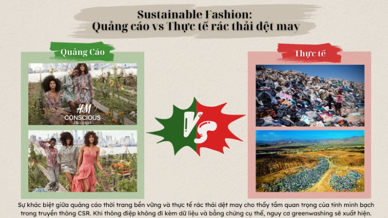

1. Sức mạnh của thông điệp thị giác trong CSR
Trong truyền thông trách nhiệm xã hội của doanh nghiệp (CSR), hình ảnh và yếu tố thị giác ngày càng đóng vai trò quan trọng trong việc xây dựng niềm tin của công chúng. Một bức ảnh về cộng đồng được hỗ trợ, một video về quy trình sản xuất thân thiện với môi trường hay một infographic về lượng khí thải được cắt giảm đều có thể tạo ra tác động mạnh mẽ đến nhận thức của người xem. Những yếu tố thị giác này không chỉ giúp thông điệp CSR trở nên dễ hiểu mà còn tạo ra sự kết nối cảm xúc giữa doanh nghiệp và xã hội.
Theo tài liệu học tập, một thông điệp CSR hiệu quả cần đảm bảo ba yếu tố "đúng – đủ – thật", tức là phải cung cấp thông tin rõ ràng, đầy đủ và trung thực để thuyết phục công chúng.
Đặc biệt, khái niệm Message Specificity nhấn mạnh rằng các thông điệp CSR càng cụ thể – ví dụ như có dữ liệu, hình ảnh quy trình hoặc bằng chứng thực tế – thì càng giúp giảm sự hoài nghi của công chúng.
Tuy nhiên, chính sức mạnh của hình ảnh cũng tạo ra một rủi ro đáng chú ý: khi doanh nghiệp sử dụng hình ảnh nhân văn hoặc thông điệp môi trường một cách chọn lọc để tạo ấn tượng tích cực, trong khi thực tế hoạt động của họ chưa thực sự bền vững. Hiện tượng này được gọi là greenwashing (tẩy xanh).
2. Case study: Tranh cãi về dòng sản phẩm "Conscious" của H&M
Một ví dụ nổi bật về tranh cãi greenwashing là chiến dịch truyền thông của H&M với dòng sản phẩm "Conscious Collection". Thương hiệu thời trang này quảng bá rằng dòng sản phẩm của họ được sản xuất từ các vật liệu bền vững hơn, chẳng hạn như cotton hữu cơ hoặc polyester tái chế. Các chiến dịch truyền thông của H&M thường sử dụng hình ảnh mang tính nhân văn và môi trường: thiên nhiên xanh, quy trình sản xuất sạch hoặc thông điệp về thời trang bền vững.
Những hình ảnh này tạo cảm giác rằng thương hiệu đang tích cực góp phần bảo vệ môi trường. Tuy nhiên, nhiều tổ chức nghiên cứu và truyền thông đã đặt câu hỏi về mức độ minh bạch của các tuyên bố này. Một số báo cáo cho rằng thông tin về tính bền vững của các sản phẩm "Conscious" chưa được công bố đầy đủ hoặc khó kiểm chứng.
Ngoài ra, bản thân mô hình fast fashion – sản xuất và tiêu thụ quần áo với tốc độ nhanh – vốn đã bị chỉ trích vì tạo ra lượng rác thải dệt may lớn và tiêu tốn nhiều tài nguyên. Điều này dẫn đến một nghịch lý: trong khi thương hiệu quảng bá hình ảnh thân thiện với môi trường, quy mô sản xuất lớn của ngành thời trang nhanh lại gây ra áp lực đáng kể lên môi trường.
3. Dấu hiệu của Greenwashing trong truyền thông CSR
Trường hợp của H&M cho thấy một số dấu hiệu phổ biến của greenwashing trong truyền thông CSR.
Thứ nhất, doanh nghiệp có thể sử dụng hình ảnh nhân văn hoặc thiên nhiên để tạo cảm xúc tích cực, nhưng lại thiếu thông tin cụ thể về quy trình sản xuất hoặc tác động môi trường thực sự.
Thứ hai, thông điệp CSR đôi khi quá chung chung, chẳng hạn như các khẩu hiệu "thời trang bền vững" hoặc "sản xuất thân thiện với môi trường" mà không có dữ liệu minh chứng.
Thứ ba, doanh nghiệp có thể nhấn mạnh một sáng kiến tích cực nhỏ để che mờ những vấn đề lớn hơn trong chuỗi sản xuất.
Chính vì vậy, Message Specificity – tức tính cụ thể của thông điệp – trở thành yếu tố quan trọng trong truyền thông CSR. Khi doanh nghiệp cung cấp bằng chứng trực quan về quy trình sản xuất, dữ liệu môi trường hoặc báo cáo minh bạch, công chúng sẽ dễ tin tưởng hơn và giảm bớt sự hoài nghi.
4. Giải pháp: Minh bạch và tính xác thực trong truyền thông
Để tránh rơi vào tình trạng greenwashing, doanh nghiệp cần chú trọng đến tính xác thực (authenticity) trong truyền thông CSR. Điều này có nghĩa là các thông điệp truyền thông phải phản ánh đúng thực tế hoạt động của doanh nghiệp.
Một số giải pháp có thể được áp dụng bao gồm:
• Công bố dữ liệu cụ thể về tác động môi trường hoặc xã hội
• Sử dụng hình ảnh minh họa quy trình sản xuất thực tế thay vì chỉ hình ảnh quảng cáo
• Hợp tác với các tổ chức kiểm định độc lập để xác minh thông tin
Những biện pháp này không chỉ giúp tăng tính minh bạch mà còn góp phần xây dựng niềm tin dài hạn với công chúng.
5. Phản tư và bài học
Qua việc phân tích Message Specificity và trường hợp của H&M, tôi nhận ra rằng truyền thông CSR không chỉ là vấn đề sáng tạo nội dung mà còn liên quan trực tiếp đến đạo đức kinh doanh. Hình ảnh nhân văn có thể tạo ra sự đồng cảm mạnh mẽ, nhưng nếu bị sử dụng để che đậy các vấn đề môi trường hoặc xã hội thì chúng sẽ làm suy giảm lòng tin của công chúng.
Trong bối cảnh người tiêu dùng ngày càng quan tâm đến tính bền vững, doanh nghiệp cần hiểu rằng niềm tin xã hội không thể được xây dựng chỉ bằng hình ảnh đẹp mà phải dựa trên bằng chứng và sự minh bạch thực sự.
6. Kết luận
Thông điệp thị giác là một công cụ mạnh mẽ trong truyền thông CSR, giúp doanh nghiệp kết nối cảm xúc với công chúng và truyền tải những giá trị tích cực. Tuy nhiên, nếu thiếu sự cụ thể và minh bạch, những hình ảnh này có thể dẫn đến nguy cơ greenwashing. Vì vậy, để xây dựng niềm tin bền vững, doanh nghiệp cần đảm bảo rằng thông điệp CSR của mình luôn đáp ứng nguyên tắc "đúng – đủ – thật", kết hợp giữa hình ảnh truyền cảm hứng và bằng chứng rõ ràng về các hành động thực tế.
7. Bộ ảnh so sánh Quảng cáo vs Thực tế quy trình xử lý rác thải vải.
